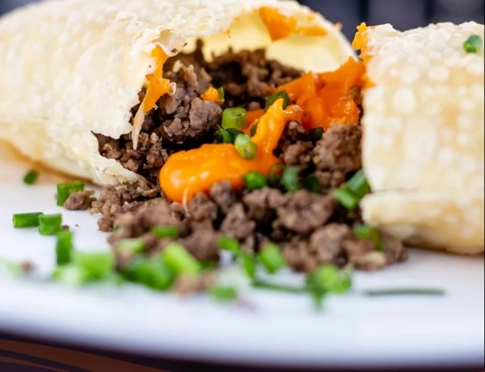

O salgado que vira tradição em qualquer cidade.
Sabor, qualidade e tradição em cada pastel. Uma receita que nasceu em Passos-MG e conquistou Poços de Caldas, Nova Serrana — e agora chega a Pouso Alegre!

De Passos-MG para o interior de Minas
O Café Pastel nasceu em Passos-MG, com uma receita simples: salgados crocantes, quentinhos e feitos com carinho, servidos por gente que trata cliente como família.
Esse jeito de fazer as coisas foi conquistando a cidade — e logo virou motivo pra crescer. Hoje já são lojas em Poços de Caldas e Nova Serrana, sempre com a mesma qualidade que começou tudo.
E o próximo capítulo já está a caminho: em breve inauguramos uma nova unidade em Pouso Alegre! 🎉
Conheça nossas lojasPassos-MG
O início da tradição — a primeira loja e a receita que deu origem a tudo.
Poços de Caldas
O sabor do Café Pastel ganha uma nova casa e novos clientes fiéis.
Nova Serrana
Mais uma loja, mais gente experimentando o que vira tradição.
Pouso Alegre — em breve!
Uma nova unidade já está sendo preparada com todo o carinho de sempre.
Qualidade e atendimento em cada detalhe
Não é só sobre o salgado — é sobre a experiência completa, do primeiro "oi" até o último pedaço.
Feito na hora
Salgados fritos e assados na hora do pedido, sempre crocantes e quentinhos.
Ingredientes selecionados
Receita tradicional com ingredientes de qualidade, sem atalhos.
Atendimento de verdade
Cada cliente é recebido como parte da família Café Pastel.
Perto de você
Presença crescendo pelo interior de Minas Gerais, cidade após cidade.
Tradição consolidada
Uma marca original de Passos-MG que virou referência em qualidade.
Fácil de encontrar
Visite a loja mais próxima de você e garanta seu lanche quentinho.
Salgados para todos os gostos
Uma seleção pensada pra agradar do café da manhã ao lanche da noite.
Nossas unidades
Encontre o Café Pastel mais perto de você.
Passos - MG
Loja original — Economart
Poços de Caldas - MG
Sabor e tradição também por aqui
Nova Serrana - MG
Mais uma casa do Café Pastel
Pouso Alegre - MG
Nova unidade chegando em breve!
O que nossos clientes dizem
Nada fala mais sobre nossa qualidade do que a opinião de quem já passou por aqui.
"O melhor pastel da cidade, sem dúvida! Sempre quentinho e o atendimento é excelente."
"Virou parada obrigatória depois do trabalho. Qualidade lá em cima sempre."
"Atendimento nota 10 e o sabor de sempre. Recomendo demais o Café Pastel!"
Segue a gente no Instagram 💛🧡
Novidades, promoções e os bastidores do Café Pastel é lá: @cafepasteloficiall